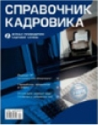
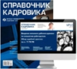

|  |  | ||
| Печатный журнал |
Электронный журнал |
Комплект изданий |
|
| Актуальная информация от ведущих экспертов | |||
| Традиционный бумажный формат | |||
| Доступность в день выхода из типографии | |||
| Быстрый поиск по всем статьям и выпускам | |||
| Доступ к вышедшим номерам 2015 и 2016 гг. | |||
| Личный кабинет, управление подписками | |||
| Доступ к нормативно-правовой базе | |||
| Техническая поддержка онлайн | |||
| Хочу подписку на печатный формат! | Хочу подписку на электронный формат! | Хочу подписку на комплект! |
Почему нужно оформить подписку на журнал уже сегодня?
Чтобы не тратить время на поиск и проверку сомнительной информации, а сразу получать точные практические
рекомендации от ведущих экспертов отрасли
Мы поможем!
Просто скачайте письмо для Вашего руководителя